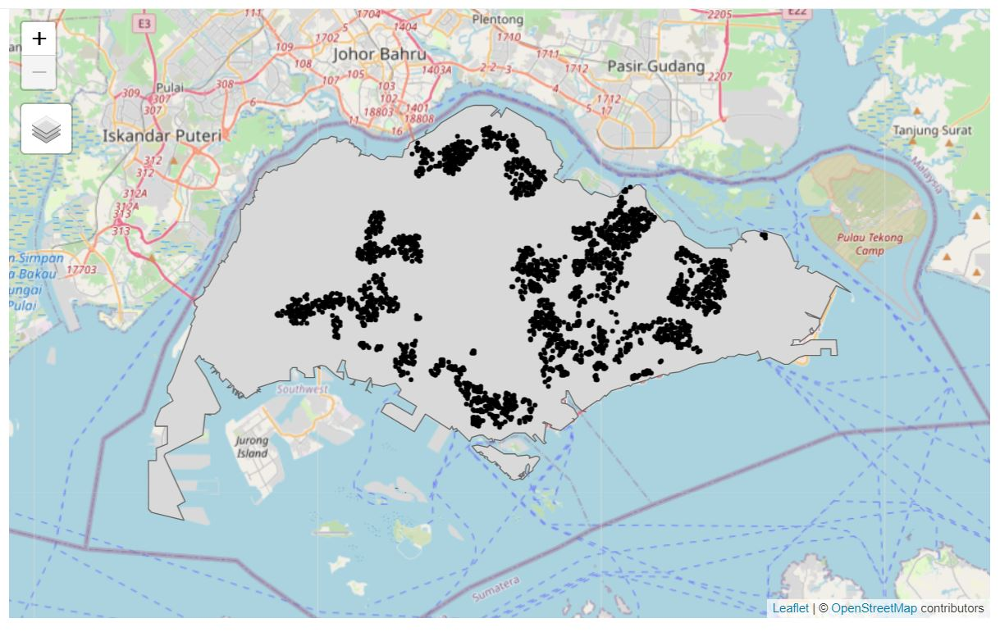
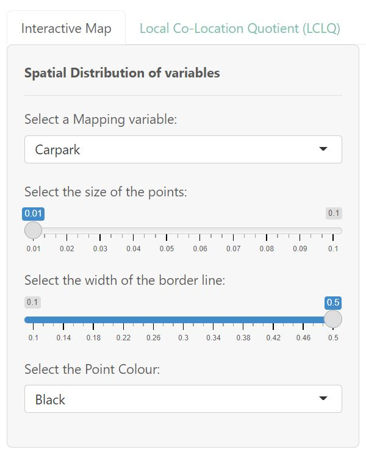
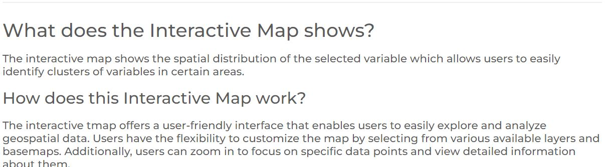
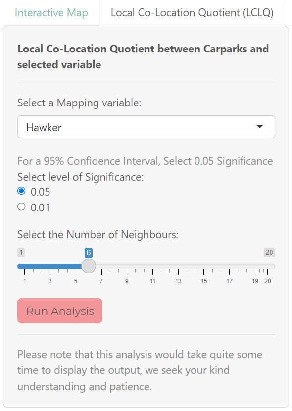
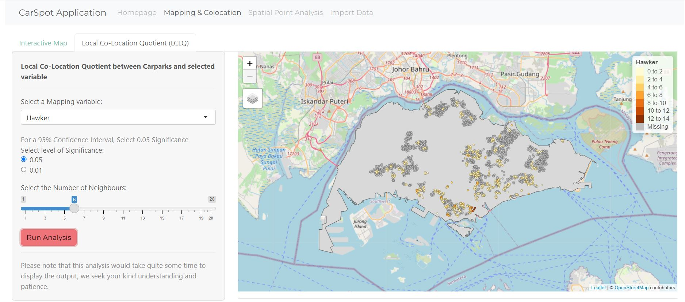
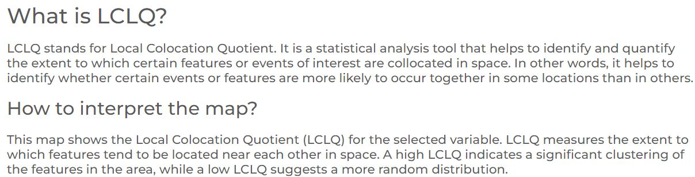
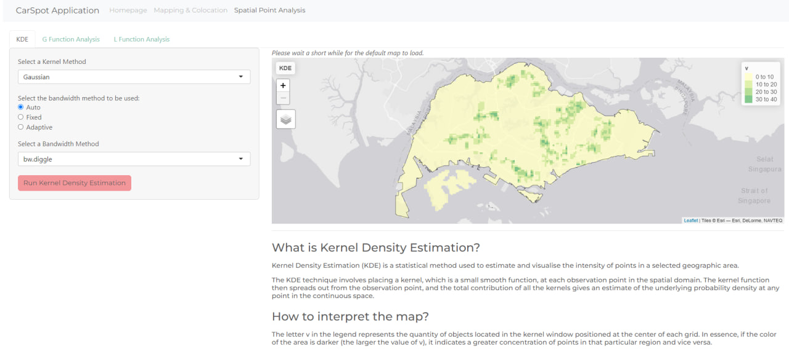
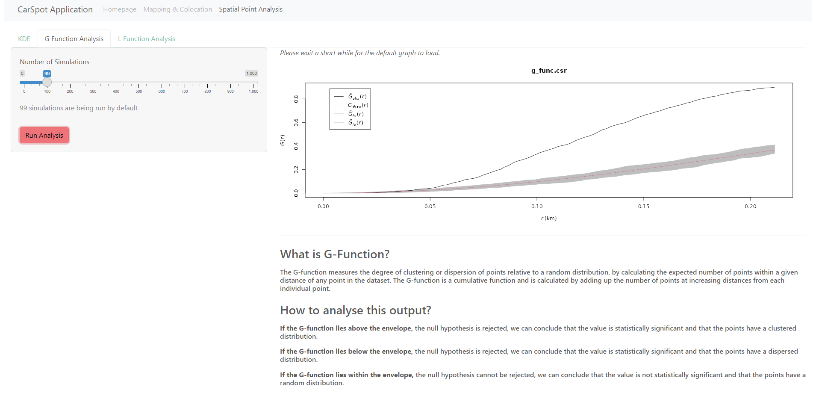

Application User Guide
Welcome to the user guide for CarSpot Shiny Application.
Link to our application: https://gailteh.shinyapps.io/is415-project/
Mapping & Co-location
Mapping
On the main panel, you can see the default map that has been rendered upon landing which is Car parks with the default based map of OpenStreetMap. 
On the left panel, you can see the variables and parameters to explore around. Including the mapping variables like Hawker, HDB, Shopping Malls. Other interesting parameters to “play” around are the size and colours of the data points.

The map is rendered automatically. And if you scroll down, you should see a brief explanation of this interactive map and how it works.

LCLQ
- A kind note for this feature of our app: LCLQ takes at least 10 mins to render the output map. Please select the parameters for this feature to work:
- Mapping variables (Hawker, Shopping mall, HDB)
- The level of significance which can also be intepreted from the confidence level
- The number of Neighbours
After selecting, click on the red button called “Run Analysis”.

The map output will resemble something similar to this 
If you scroll down, you can see the brief description on what is Local Co-location Quotient and how it works.

Spatial Point Pattern Analysis
Kernel Density Estimation (KDE)

When you first enter into the Kernel Density Estimation (KDE) page by clicking on the “Spatial Point Analysis Tab”, the application will run KDE using the Gaussian method and using an automatic bw.diggle bandwidth by default, and its graph will appear.
In the side panel, users are able to choose their kernel method, bandwidth method, and if automatic bandwidth, they are able to choose between bw.CvL, bw.scott, bw.diggle and bw.ppl. For fixed bandwidth option, they are able to choose between 0-5, with an interval of 0.1. By default, the fixed bandwidth will be at 0.6 if chosen.
Below the graph is a short write-up of what KDE is supposed to analyse and how you can analyse the output generated.
G Function

When you first enter into the G-Function page by clicking on the “G Function Analysis Tab”, the application will run 99 simulations of the G-Function by default, and its respective graph will appear.
In the side panel, to change the number of simulations, drag the slider and then click on the “Run Analysis” button to generate a new graph.
Below the graph is a short write-up of what G-Function is supposed to analyse and how you can analyse the output generated.
L Function
When you first enter into the L Function page by clicking on the “L Function Analysis Tab”, the application will run 99 simulations of the L Function by default, and its respective graph will appear.
In the side panel, to change the number of simulations, drag the slider and then click on the “Run Analysis” button to generate a new graph.
Below the graph is a short write-up of what L Function is supposed to analyse and how you can analyse the output generated.